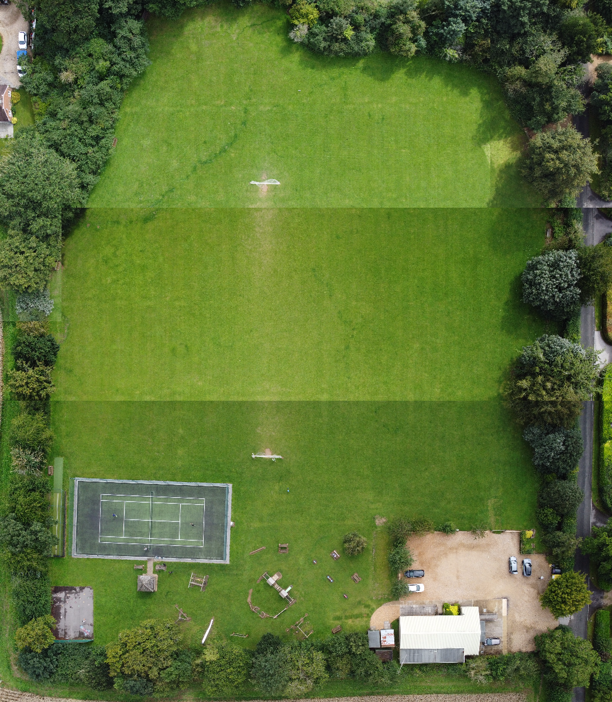
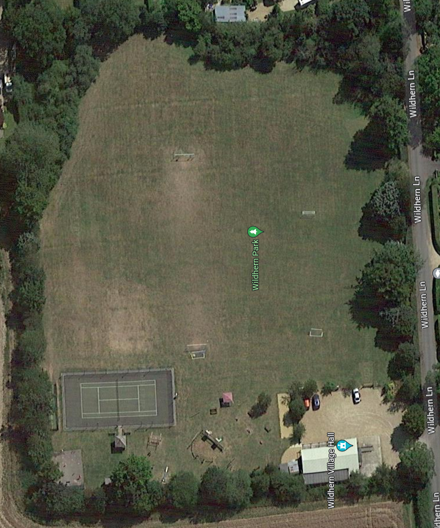

Ariel Drone Photography Portfolio
Wildhern Park, Andover
My ariel photograph (on the left)Latest Google maps satellite image (on the right) as of August 2023


I am fully qualified to fly my DJI Mini SE (sub 249g) in the A1 open category. I also have a valid Flyer ID allowing me to fly heavier drones (between 250g - 2kg) in the A3 open category. I am currently working through an online course with UAVhub towards achieving the A2 CofC (Certificate of Competency). This will allow me to fly for commerical purposes aswell as allowing me to operate sub 2kg drones in the A1 sub-category and sub 25kg drones in the A2 sub-category.
I have recently been attempting to create satellite-like images of public spaces. In order to do this, I fly my drone to just under the legal height limit of 120m (400ft) and take a top down photo of the area. I then fly in a grid shaped pattern whilst taking more photos until I have covered the entire area. Once I have finished, I use Piskel software to create one large image of the entire area. This animation is helpful to understand how the process works. The 4 pixelated images are taken and merge to reveal the larger image:
Wildhern Park, Andover
My ariel photograph (on the left)Latest Google maps satellite image (on the right) as of August 2023